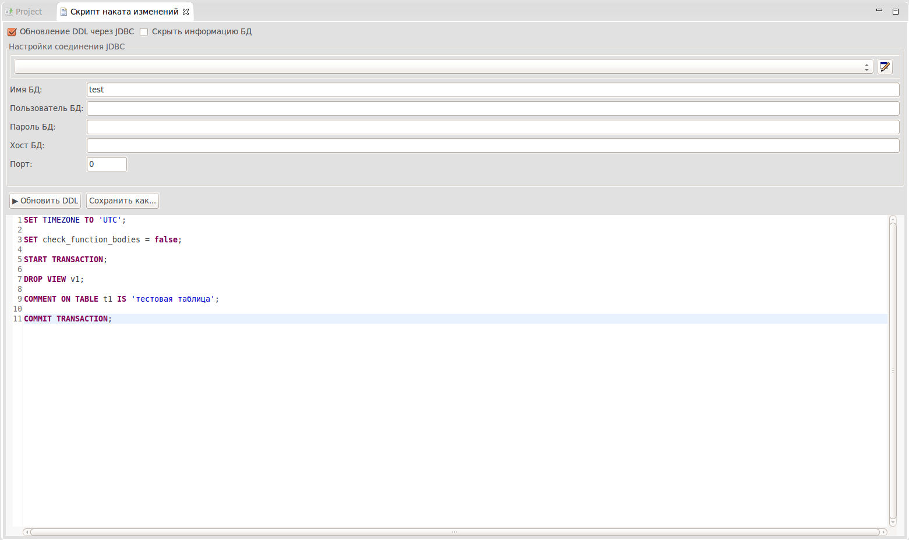

Редактор скрипта наката изменений представляет из себя панель настройки и SQL редактор pgCodeKeeper.
Панель настройки предоставляет возможность для выбора и способа обновления базы данных. Обновить DDL можно как через JDBC, так и через любую удобную для Вас утилиту. По умолчанию предлагается использовать обновление через JDBC.
В поле SQL редактора pgCodeKeeper представлен сгенерированный скрипт наката, приводящий исходные состояния объектов внешней БД, к целевому состоянию существующему в проекте. Этот редактор имеет такие же возможности, что и обычный SQL редактор pgCodeKeeper.
